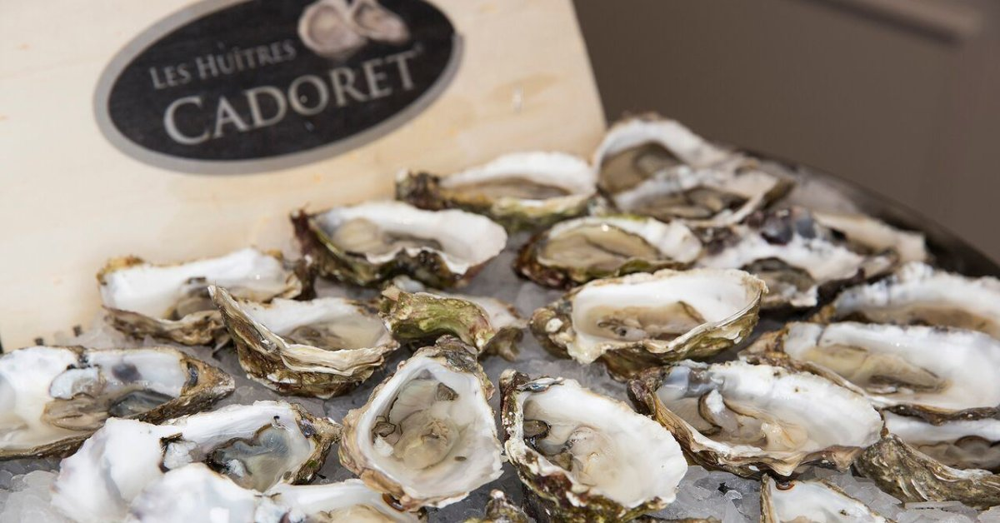

Welcome to austrės
Austrės - kalorijų savybės, naudojimas
2020.10.29 10:04Pirmoji pagalba Diagnostikos metodai Medicina Diagnostikos metodai Nėštumas po savaitės Nuoroda dietos Default Nuoroda dietos Maisto papildai Kategorijos Medicina Diagnostikos metodai Maistas Grožio procedūros Katalogas vitaminų Maistas Nėštumas po savaitės Kategorijos Medicina Maisto papildai
Austrės
Austrės - Tai dvigeldžius, atstovai bestuburių jūrinės gyvybės. Išoriškai jie kriaukle asimetrišką formą. Vienas sparnas turi didelę išgaubtą formą ir su jo pagalba vėžiagyvių pridedamas prie uolos ar akmens. Antrasis kartus šiek tiek mažesnę, plokštesnė ir plonas. Ant vidinio paviršiaus lukštais yra padengtas perlų sluoksniu, ir viduje, kur yra valgomieji kiaukutinius. Skonis austrės skirtingi - nuo saldaus iki sūrus, ir gali skirtis priklausomai nuo regiono ir buveinių apsaugos moliuskas.
Pagrindinės komercinių rūšių yra austrių, kuris gyvena Viduržemio ir Juodojoje jūrose. Atskirti apie penkiasdešimt rūšių austres, kurių klasifikacija pagal svorį ir matmenų. Pavyzdžiui, yra austrių numeris 00, kuris yra didžiausio dydžio moliuskai. Bet austrės iš 0 iki skaičiumi 5 turi mažiausią dydį. Dažniausiai Europos austrių №3, sveria žinutę 80-100 vidutiniškai Atskirti Adrijos austrių, roko, portugalų, Juodoji jūra, plokštė, Japonijos milžinė ir kt. Be to, yra austrės ištaurinta (rafinuotas arba auginami ypatingomis sąlygomis ), ir yra auginami sąlygomis bendra jūros.
Gyvenimas kaip austrių kolonijų, o po vieną, esant 1-70 metrų gylyje. Jie pridedami prie uolų, smėlio ir uolų žemės ar akmenų. Yra net vadinamieji austrių lovos (vėžiagyvių populiacijas, kurios yra tam tikru atstumu nuo kranto), ir pakrančių gyvenvietėms vėžiagyvių.
Istorija
Archeologiniai kasinėjimai rodo, kad austrės buvo naudojamas kaip maistas nuo seniausių laikų. Tai žinoma, kad jie buvo veisiami Kinijoje anksčiau kaip 4 tūkstantmečio pr. Europoje austrių pirmą kartą paminėtas 500 BC senovės Graikijoje ir Romoje.
Ypač plačiai populiarumas jie gavo per karaliaus Liudviko XVI, kuris atvedė prie to, kad vidurio 19-ojo amžiaus, jų gyventojų skaičius pradėjo dingti laikais. Bet yra sidabro pamušalas: austrės išmoko veisti dirbtinai. Dėl šios austrių kūdikiai buvo sugauti ir dedamas į specialiai paruoštas gamykloje, kur jų augimas dirbtinai kontroliuojama.
Iš anksto revoliucinis Rusijos austrių plačiai, kaip restoranų patiekalų ir valgyti daugiausia turtingesni sluoksniai gyventojų. Sovietmečiu jų paklausa smarkiai sumažėjo ir buvo pradėtas jų importą iš Kubos į 70-ųjų turėjo sustoti. Patiekalas nėra populiarus net restoranų. Čia reikėtų pažymėti, suvaidino didelį vaidmenį trūksta kulinarijos patirtimi ir kai pasibjaurėjimu, nes jūs turite turėti gyvą austrių.
Austrės maisto ruošimui
Prancūzijoje ir Belgijoje, austrės yra delikatesas, o jų maistas turėtų būti suvartojama gyvybės formos. Jei austrių yra miręs, tada jis yra sugedęs ir ten negali būti. Svarbiausias kriterijus šviežumo yra sandariai uždarytą lukštais. Bet jei į kriauklę ten bent mažą tarpelį, tada austrių jau pasenusi, ir negali būti. Atviras austrių austrių peiliu arba specialus medicininis skalpelis. Jis yra skiriamas į vietą, kur lapų, prijungto prie spyna, ir vykdomas per vidurį ir austrių su plokščiojo šono lukštais į raumenis, fiksavimo sklendes. Kai apvalkalas yra atidarytas, turite paliesti, kur linija galima išskirti tamsus blakstiena krašto. Jei austrių yra gyvas - ji krūptelėti, kai ji bus likti pritvirtinti, tai reiškia, kad ji yra miręs ir netinka maistui.
Restoranai austrės yra labai paprastas - lengvai apipurkšti citrinos sultimis ir gėrimas su giliai kreivų pusių lapų. Apimtas austrių paprastai juoda duona (Prancūzijoje jis yra importuojama tik austrių) ir išplauti žemyn su šviesaus alaus ar sauso baltojo vyno.
Daugelyje šalių, gaminančių konservuoti austrės, kurie jau skrudinta arba virinto pusgaminį, kuris, kaip midijos ir krabų, kurie naudojami salotoms ir sriuboms į kapotos formos skaičiaus. Jie neturi naudingų savybių šviežių austrių, o jos skonis gana skirtingi.
Sudėtis ir kaloringumas austrės
100 g austrių yra 82 06 g vandens, 9, 45 g baltymų, 4, 95 g angliavandenių, 2, 3 riebalai, 1, 23 g pelenų; vitaminai retinolio (A), tiamino (B1), riboflavinas (B2), niacino (PP), pantoteno rūgštis (B5), piridoksino (B6), folio rūgšties (B9), cianokobalamino (B12), vitaminas C; makroelementų: fosforo, natrio, magnio, kalcio ir kalio; mikroelementų: seleno, cinko, vario, mangano ir geležies.
Kalorijų austrės yra mažas ir sudaro apie 78 kcal 100 g
Naudokite austrės
Pagrindinis privalumas yra tai, kad jų austrė turtinga mineralinių ir vitamino kiekis (vitaminai, nikotino rūgšties, niacino, jodo, geležies, fosforo, seleno, vario, cinko, ir tt). Be to, didelis skaičius lengvai virškinamas baltymų ir mažai kalorijų leidžia klasifikuoti austres juos su maistu suvartojamų likučių maisto.
Naudinga savybės austrės yra į nervų sistemos normalizavimo, stiprinti kaulų naudą, pagerinti kepenų ir inkstų funkcijos.
Amerikos mokslininkai nustatė austrių keramidų dalis - riebalų rūgščių, kurios yra leidžiama atidaryti dar vieną teigiamą nuosavybės austrės - augimo vėžinių ląstelių slopinimą.
Be to, bendras darbas Italijos ir Amerikos mokslininkų panaudoti austrės yra tai, kad jų sudėtis metu unikalių amino rūgščių, kurios skatina lytinių hormonų gamybą.
Kontraindikacijos
Austrės yra kontraindikuotinas žmonėms, kenčiantiems nuo žarnyno ligų su dažnai pažeidžiamos kėdės, blužnies ir skrandžio. Be to, žaliavos austrės nerekomenduojama vartoti nėščioms ir žindančioms moterims.
